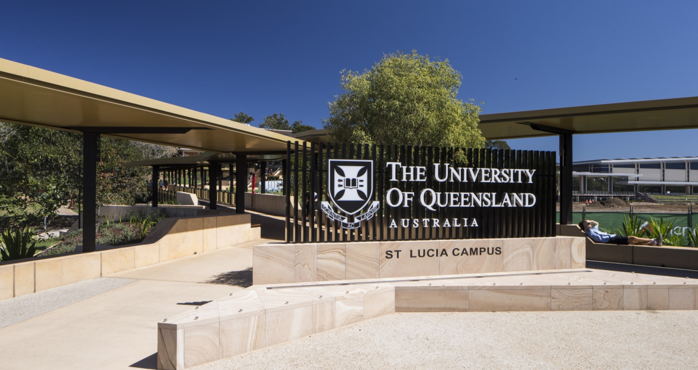

Education
Tertiary
The majority of my tertiary education has taken place at The University of Queensland, St Lucia campus, in Brisbane, Australia. I have completed short courses at Queensland University of Technology, and visited Harvard, MIT, and Boston University in the United States.
Graduate Certificate in Interaction Design
University of Queensland, 2020 - This degree explored methods for designing user interactions with technology. Most of the coursework was based around research methods for determining user needs and requirements, and how these could be incorporated into the design of new products, services, and technology systems.
Graduate Certificate in Higher Education
University of Queensland, 2015 - This degree explores the Scholarship of Teaching and Learning within the tertiary education sector. My graduate thesis explored ways to improve student engagement in online learning platforms. This culminated in the total redesign of the course "POLS2501: Human Rights and International Politics," a project case study wherein I evaluated learning outcomes from internal and external offerings of the same course.
Bachelor of Arts (Honours)
University of Queensland, 2011 - My first foray into the realm of international relations and political science. I completed an extended major in International Relations, with a minor in Peace and Conflict Studies, formalizing a passion for learning more about the world in which we live. My honours thesis investigated ways in which national political identity was invoked in constitutional interpretation when responding to non-violent, ideologically motivated extremism that attempted to undermine and subvert democracy and the rule of law. My specializations at the time extended to political subversion, free speech, and the conditions under which emergency laws could be enacted to suppress speech acts that acted counter to the "public good" - however that was defined.
Secondary
I completed my pre-tertiary education at a number of schools across Australia and Malaysia. As an expatriate student living in Kuala Lumpur, I had the opportunity to attend numerous International Schools, giving me exposure to the British, American, and Malaysian schooling curriculums.
Anglican Church Grammar School
Brisbane, Australia: 2004 to 2006 - I completed my highschool education here, after returning to Australia from Malaysia.
Mont Kiara International School
Kuala Lumpur, Malaysia: 2002-2004 - An American International School based in the leafy suburb of Mont Kiara. The school predominantly catered exclusively to international students, and incorporated the International Baccalaureate system to prepare students for American universities.
Brisbane Boys College
Brisbane, Australia: 2001-2002 - While my family moved throughout Southeast Asia, I attended boarding school alongside my older brother.
Austraian International School Malaysia
Kuala Lumpur, Malaysia: 2000-2001 - I was one of the first students at the Australian International School, and just about the only with an Australian background. Classes were smaller, and as such, my 6th grade class was combined with the the 7th and 8th grade student cohorts.
Employment
My career has taken me across the world, and has spanned fields as diverse as politics, education, scuba diving, and interaction design.
2020-Current
Academic Demonstrator, The University of Queensland
I have acted as a tutor and academic demonstrator in a number of courses taught under the Interaction Design degree. My work was focused on research methods and design thinking, and how these apply to the development of new technologies and systems.
Courses taught:
2017-2019
Advisor, The Office of the Hon. Kevin Rudd
My second stint working for the former Prime Minister of Australia, the Hon. Kevin Rudd. I worked as a political advisor under him, in his capacity as President of the Asia Society Policy Institute. As such, I largely moved between Brisbane and New York.
2016-2017
Divemaster, Scuba Junkie Borneo
I took a brief career break to work as a scuba divemaster on a remote island off the coast of Malaysian Borneo called "Palau Mabul". I'd been drawn to this island as it was immediately next to Sipadan, an island that had been subject to an international territorial dispute between Malaysia and Indonesia. Mabul was home to a community of Bajau Laut "Sea Nomads," who offered a unique insight into the lives of stateless people in the 21st century.
2015-2016
Executive Assistant, The Office of the Hon. Kevin Rudd
My first occasion working for the Hon. Kevin Rudd. Here I worked largely as a research assistant, policy analyst, and speechwriter as part of Mr Rudd's campaign for the United Nations Secretary General campaign.
2011-2017
Sessional Academic, The University of Queensland
Following the completion of my undergraduate degree, I was employed as a tutor and sessional academic across a number of international relations and foreign policy courses: